1. Which of the following is a 3º-amine? A) 1-methylcyclohexylamine B) triethylamine C) tert-butylamine D) N-methylaniline
2. Which of the following compounds is cyclopentyldiethylamine?
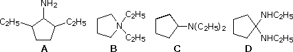
3 Which of the following is a proper name for CH2=CHCH2NHCH3? A) allylmethylamine B) 4-amino-1-pentene C) 2-amino-4-pentene D) N-methyl-1-propenamine
4 Which of the following is tetrabutylammonium iodide? A) C4H9NH3+ I– B) C4H9N(CH3)3+ I– C) (C4H9)4N+ I– D) (CH3)4N+ I–
5 Which of the following is N,N-dimethylaniline?
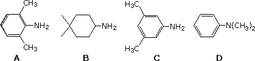
6 Which of the following is a proper name for (CH3)2CHCH2NHCH2CH2CH(CH3)2? A) 2,7-dimethyl-4-azaoctane B) butylpentylamine C) 2,7-dimethylpropylbutylamine D) 3-amino-2,7-dimethyloctane
7 Ethylmethylamine cannot be resolved under normal conditions. Why? A) the favored configuration is not chiral. B) it isomerizes rapidly with the achiral isomer trimethylamine. C) the nitrogen atom rapidly inverts its configuration leading to a racemic mixture. D) the C–N bond is not stable under conditions used for resolution
8 Which of the following is pyridine?
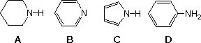
9 Which of the following is the strongest base in aqueous solution?. A) (CH3)3N B) (CH3)2N CH2CH2OH C) CH3CH2CH2NHOH D) (CH3)4N OH
10 Which of the following is the strongest Brønsted base?
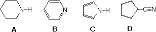
11 Dibutylamine, (C4H9)2NH, and anisole, C6H5OCH3, have similar boiling points, and are relatively insoluble in water. How might a mixture of these compounds be separated into the pure components? A) i) dissolve mixture in ether; ii) extract the anisole into 10% aqueous NaOH B) i) dissolve mixture in ether; ii) extract the amine into 10% aqueous HCl C) i) dissolve mixture in ether; ii) extract the amine into 10% aqueous NaOH D) i) dissolve mixture in ether; ii) extract the anisole into 10% aqueous HCl
12 Which of the following is the strongest Brønsted acid?
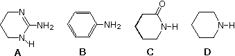
13 Which of the following is the strongest Brønsted base?
14 Which of the following is the weakest Brønsted base?
15 Which of the following is the weakest Brønsted base?
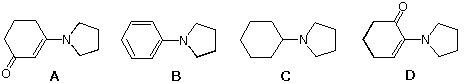
16 Which of the following is the strongest Brønsted base?
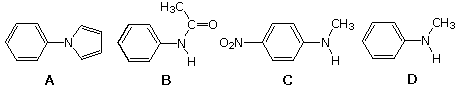
17 Which compound is the likely product from reaction of pyrrolidine with excess methyl iodide (equation below)?
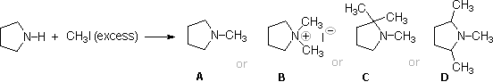
18 For the following compounds, which is the strongest base and which the strongest acid ?
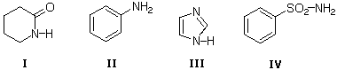
19 Basic reagents are used in many organic reactions. Examples are: I triethylamine, II DBU, III potassium phthalimide & IV LDA. Which of these is the strongest base?
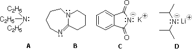
20 Benzylamine may be alkylated as shown in the following equation. C6H5CH2NH2 + R-X ----> C6H5CH2NHR (pyridine is used to scavange the HX produced here) Which of the following alkyl halides is best suited for this reaction? A) (CH3)3CCH2Br B) C6H5Br C) C6H5CH2Br D) (CH3)3CCl
21 Three heterocyclic amines are shown below: I = pyridine, II = pyrimidine, III = imidazole. What is the order of increasing basicity? (weaker base < stronger base)
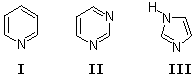
22 Which of the following reagents would not be a good choice for reducing an aryl nitro compound to an amine? A) H2 (excess) & Pt catalyst B) LiAlH4 in ether C) Fe in 15% HCl D) Zn in 10% HCl
23 What reagent is the source of nitrogen in the Gabriel synthesis of amines? A) sodium azide, NaN3 B) sodium nitrite, NaNO2 C) potassium cyanide, KCN D) potassium phthalimide, C6H4(CO)2NK
24 In order to prepare a 1º-amine incorporating an additional CH2 group from an alkyl halide, what reagent is often used as the nitrogen source? A) sodium amide, NaNH2 B) sodium azide, NaN3 C) potassium cyanide, KCN D) potassium phthalimide, C6H4(CO)2NK
25 What set of conditions would be useful for preparing a 2º-amine? A) 2º-RBr + NaNH2 B) (i) 2º-RBr + NaN3 (ii) H2 & Pt C) (i) 1º-RNH2 + 1º-RCHO (ii) H2 & Pt D) (i) 2 1º-RBr + potassium phthalimide (ii) H3O+ & heat
26 What reagent is used in the Hinsberg test of amines? A) (CH3CO)2O & pyridine B) C6H5SO2Cl in aq. NaOH C) NaNO2 in aq. H2SO4 D) CH3I (excess) followed by AgOH
27 Which of the following will be the favored product from the reaction shown below?
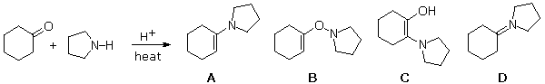
28 Which of the following procedures would be best for preparing isobutylisopropylamine, (CH3)2CHNHCH2CH(CH3)2? A) (CH3)2CHBr + (CH3)2CHCH2NH2 B) (i) (CH3)2CHBr + (CH3)2CHCONHNa (ii) LiAlH4 in ether C) (i) (CH3)2CHNH2 + (CH3)2CHCH=O (ii) H2 & Pt D) (CH3)2CHCN + (CH3)2CHNH2
29 What is the chief product from the Hofmann elimination of 4-methyl-2-aminopentane? A) 4-methyl-1-pentene B) 4-methyl-2-pentene C) 2-methyl-1-pentene D) 2-methyl-2-pentene
30 Which of the following procedures would be best for preparing dimethylcyclohexylamine, C6H11N(CH3)2? A) (i) dimethylamine + cyclohexanone (ii) NaBH3CN in methanol B) dimethylamine + cyclohexylbromide in ether C) cyclohexylamine + 2 CH3I in ether D) (i) cyclohexylbromide + NaCN in methanol (ii) 2 CH3Li in THF
31 What reagent would be best for converting the amide of (R)-2-phenylpropanoic acid, C6H5CH(CH3)CONH2, into (R)-1-amino-2-phenylpropane? A) excess H2 & Pt. B) NaOBr in aqueous base. C) NaBlH4 in methanol D) LiAlH4 in ether.
32 What reagent would be best for converting the amide of (R)-2-phenylpropanoic acid, C6H5CH(CH3)CONH2, into (R)-1-phenylethylamine? A) excess H2 & Pt. B) NaOBr in aqueous base. C) NaBlH4 in methanol D) LiAlH4 in ether.
33 The structural formulas of four physiologically active amines are displayed below. choline is a nerve transmission agent, benzedrine is an amphetamine, benadryl is an antihistamine, and coniine is a toxic alkaloid found in hemlock. Which of these would be classified as a tertiary amine?
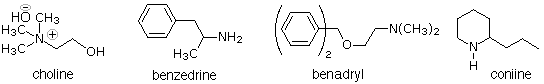
34 Many kinds of amino alcohols are known, but α-amino alcohols such as 1-dimethylaminocyclopentanol are not stable under most conditions. Which of the following statements best accounts for their instability? A) carbon does not like to form bonds to two more electronegative atoms such as O and N. B) the α-isomer rapidly rearranges to the more stable β amino alcohol. C) rapid loss of water (a stable small molecule) leads to an imine product. D) rapid loss of amine leads to a stable carbonyl compound (aldehyde or ketone).
35 Which of the following amines reacts most rapidly with para-nitrophenylacetate, p-NO2C6H4OCOCH3? A) para-methoxyaniline,.p-CH3OC6H4NH2 B) para-nitroaniline, p-NO2C6H4NH2. C) aniline, C6H5NH2. D) cyclopentylamine, C5H9NH2.
36 What product mixture is expected from reaction of (S)-2-aminobutane with 2-butanone in the presence of NaBH3CN? A) a pair of enantiomers. B) a pair of diastereomers, both meso. C) a pair of diastereomers, one meso one chiral. D) a pair of diastereomers, both chiral (not enantiomers).
37 Which of the following compounds is the strongest base? A) (CH3)2NCH2CO2CH3. B) (CH3)2NCOCH3. C) (CH3)2NC≡N. D) (CH3)2N-N=O.
38 What is the chief product from the following reaction?
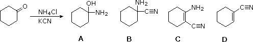
39 The nitrogen atom in each of the following tertiary amines may be removed as trimethyl amine by repeated Hofmann eliminations (exhaustive methylation followed by heating with AgOH). Which of the amines requires the greater number of Hofmann sequences to accomplish this?
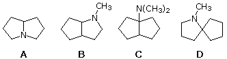
40 Only one of the following amines will lose its nitrogen atom as trimethyl amine by repeated Hofmann elimination reactions (exhaustive methylation followed by heating with AgOH). Identify that amine.
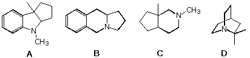
41 A nitrogen containing compound dissolves in 10% aq. sulfuric acid.. The Hinsberg test (C6H5SO2Cl in base) gives a solid product that is not soluble in 10% aq. NaOH.. Which of the following would best fit these facts? A) N,N-dimethylaniline, C6H5N(CH3)2. B) N-methylbenzamide, C6H5CONHCH3. C) N-methylaniline, C6H5NHCH3. D) benzylamine, C6H5CH2NH2.
42 Which of the following reagents would be best for converting phenylacetamide (C6H5CH2CONH2) to benzylamine (C6H5CH2NH2)? A) LiAlH4 in ether. B) i) P2O5 & heat; ii) LiAlH4 in ether. C) H2 & Pt catalyst. D) aqueous NaOBr.
43 The Hinsberg test of a C5H14N2 compound produces a solid that is insoluble in 10% aq. NaOH. This solid derivative dissolves in 10% aq. sufuric acid. Which of the following would best fit these facts? A) NH2CH2CH2CH2N(CH3)2. B) (CH3)2NCH2CH2NHCH3. C) NH2CH2C(CH3)2CH2NH2. D) (CH3)2NCH2N(CH3)2.
44 Which of the following reagents and conditions would be best for the preparation of cyclohexylamine? A) cyclohexanone + NH3 + NaBH3CN. B) cyclohexylbromide + 2 NH3. C) cyclohexylbromide + NaNH2. D) cyclohexene + NH3.
45 Which of the following reagents would be best for converting phenylacetamide (C6H5CH2CONH2) to phenethylamine (C6H5CH2CH2NH2)? A) H2 & Pt catalyst. B) NaBH3CN. C) LiAlH4 in ether. D) aqueous NaOBr.
46 Repeated Hofmann elimination reactions (exhaustive methylation followed by heating with AgOH) will often remove a nitrogen atom from an amine molecule. Which of the following compounds is the likely product in this case?
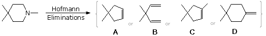
47 What sequence of reactions would best accomplish the following reaction?
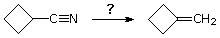
48 What is the likely product from the following reaction?
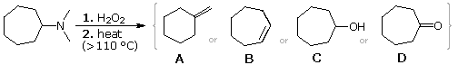
49 Which of the following statements concerning amine oxides is not true? A) chiral amine oxides may be resolved. B) the nitrogen has a positive formal charge. C) the nitrogen hybridization is sp3. D) all types of amines can form amine oxide derivatives.
50 Amines are well known to be stronger bases and nucleophiles than alkenes. Why do enamines, such as 1-dimethylaminocyclopentene, preferentially react with electrophiles at a double bond carbon rather than at nitrogen? A) the nitrogen is sterically hindered by alkyl substituents. B) nitrogen is more electronegative than carbon. C) the carbocation formed by electrophilic attack at C-2 is stabilized by pi-bonding with the lone pair of electrons on nitrogen. D) ammonium cations are less stable than carbocations.
51 A C5H13N compound gives a base soluble derivative in the Hinsberg test (C6H5SO2Cl in base). The 13Cnmr spectrum of this compound has four resonance signals at δ 8.7, 29.9, 37.5 & 49.5 ppm. Which of the following fits these facts best? A) 1,1-dimethylpropylamine. B) isopropyldimethylamine. C) 2,2-dimethylpropylamine. D) N-methyl-2-methylpropylamine.
52 Reaction of para-chloroaniline with acetic anhydride in pyridine gave a mixture of 94% of para-chloroacetanilide, contaminated with 6% unreacted amine. Which of the following treatments would be best used to purify the amide? A) react the unreacted amine with methyl iodide. B) wash an ether solution of the crude product with concentrated brine (aq. NaCl). C) wash an ether solution of the crude product with 5% aqueous sulfuric acid. D) wash an ether solution of the crude product with 5% aqueous sodium carbonate.